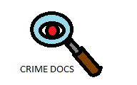

Introduction
Crime Docs is a website designed by Cesar O. Torres Rodriguez that provides users with information about society's most dangerous criminals. The idea of this website came from the sudden surge of interest towards crime and crime documentaries. I wanted to create a website that could provide information about notorious criminals in the most efficient way possible. This is the product of that idea, i intend to continue improving this website and eventually transform it into something completely different when the time comes. The main goal now is to recruit my friends so we can code the website together and make it a huge project with different ideas.
Eventually, perhaps i will allow viewers to edit or add any profiles they want but that would be later on once i've established the page a little more.
What Is a Serial Killer?
The term "Serial Killer" is given to describe an individual or a set of individuals who murder 3 or more people in separate events. These individuals often have little to no empathy and feel no remorse for the crimes they commit. In fact, this is the one thrill that attract them the most. That is why most serial killers are often considered psychopaths. Serial killers are often able to mix themselves within society by hiding their bloodlust and seemingly appearing normal under society's standards. Many serial killers are created through a form of trauma early in their lives, this can be attributed to a dysfunctional family or other factors in their youth. Trauma is a very recurring factor that will be seen in Crime Docs' profiles. Once said trauma occurs, these killers never recover from this type of trauma and fail to develop empaty and guilt which makes them feel no regret for their gruesome actions. Though there have been many killers to fit this profile, there are some unique cases like Ted Bundy who seemingly left criminal psychologists in shock due to the fact he didn't seem to possess any psychopathic behavior and even managed to convince people he was innocent for a time. These unique killer profiles avoid any unnecessary attention by using manipulation and charm. Crime Docs serves to better understand what created these Serial Killers and what they are capable of.